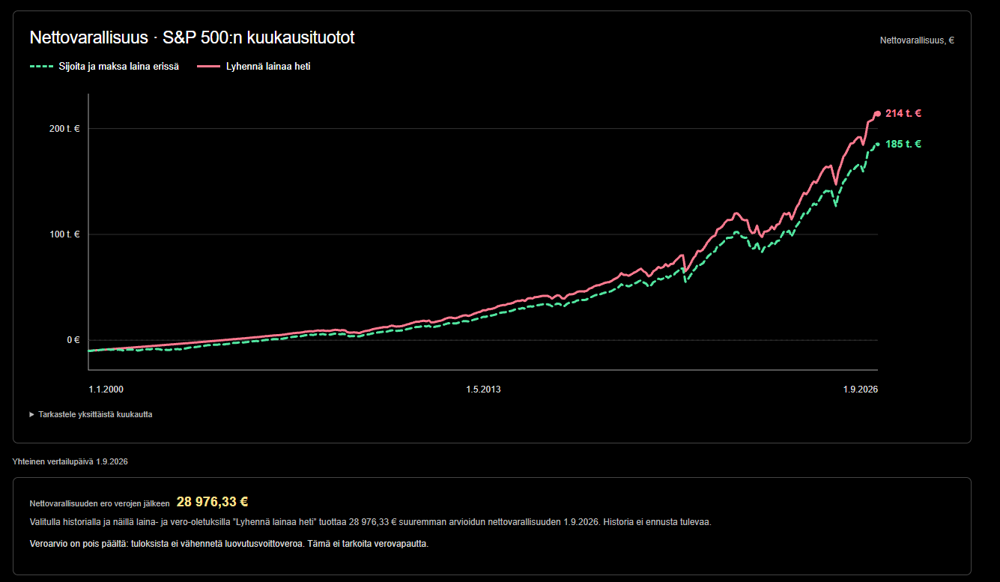
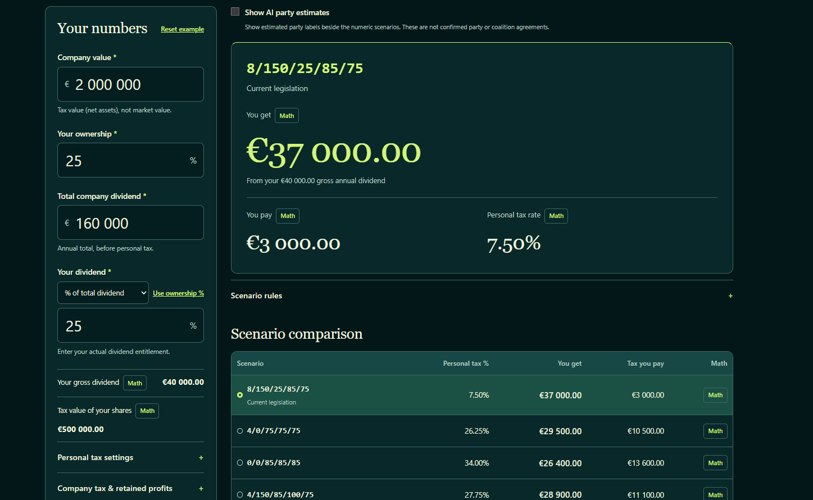
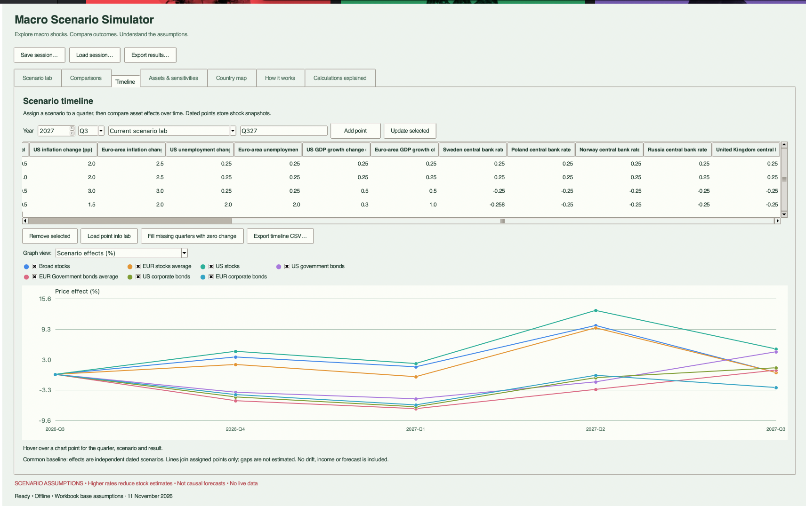
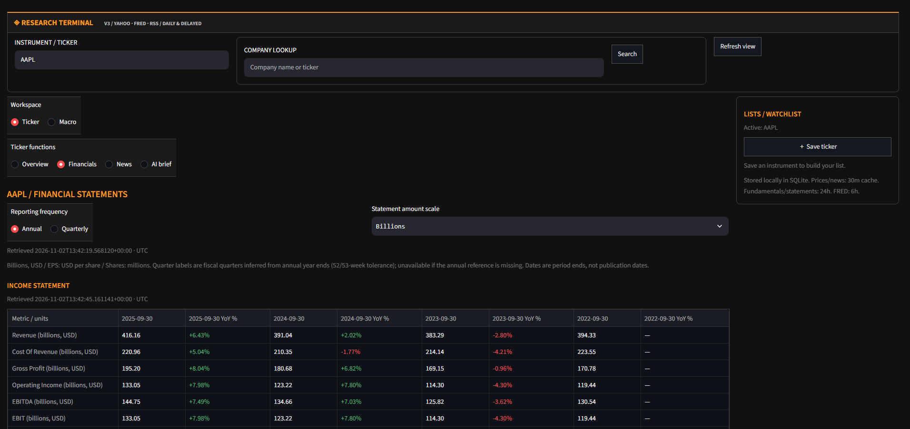
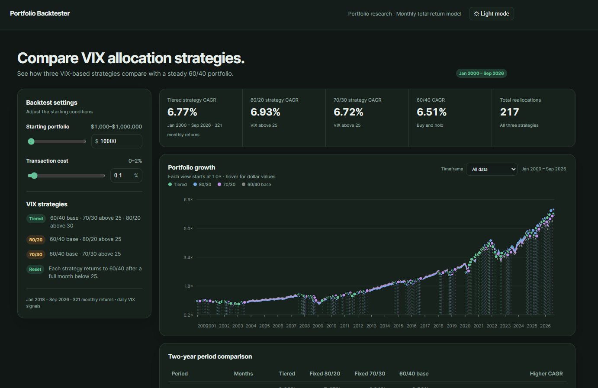
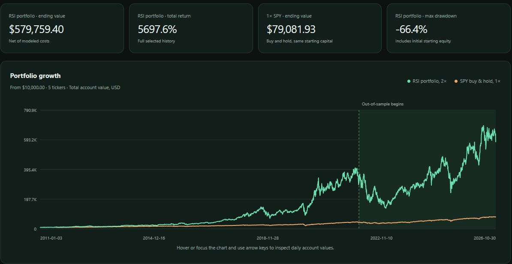

06Student-loan vs investing
A calculator comparing immediate student-loan repayment with investing and repaying the loan in monthly instalments.
https://github.com/eeldii/Opintolaina-vs-sijoittaminen
- Created
Experiments and tools I’ve built. Some are live sites, others are code on GitHub to check out.
Projects I’m currently working on.
Helps private bankers build stronger client relationships through personalized contact suggestions.
Featured project

06A calculator comparing immediate student-loan repayment with investing and repaying the loan in monthly instalments.
https://github.com/eeldii/Opintolaina-vs-sijoittaminen

05A browser-based calculator comparing Finnish unlisted-company dividend taxation across seven scenarios. Includes scenario graphs, light and dark themes, calculation explanations, and Excel (.xlsx), JSON and print/PDF exports.
github.com/eeldii/Unlisted-dividends-tax-calculator

04An offline Python desktop app for exploring how macroeconomic changes could affect stocks and bonds, with editable assumptions, scenario timelines, and an interactive country map. Mostly done as an exercise, not to predict scenarios very accurately.
https://github.com/eeldii/Public-Macro-Scenario-Simulator

03I built a basic financial research terminal which shows ticker-specific data, news sentiment and macroeconomic data. This program runs on Python 3.12, so unfortunately it is not available on GitHub Pages. Latest version: v5.
https://github.com/eeldii/Finance-research-terminal

02I wanted to find out if rebalancing between a 60/40, 70/30 and a 80/20 portfolio simply by looking at the VIX-index results in better risk adjusted returns. Latest model available both in code and GitHub pages.
eeldii.github.io/vix-adjusted-60-40

01I wanted to see if buying stocks when their RSI is low can beat buying and holding SPY. The latest version includes a simple leveraged trading algorithm. This was my very first project.
https://github.com/eeldii/Public-RSI-leverage-trade-model